🏛️
Historie
🌍
Cestování
🎯
Šipky
♟️
Šachy
🎫
Akce
📷
Galerie
🗺️
Mapa

Říše vznikaly a zanikaly.
Myšlenky přežívaly staletí.
Někteří vedli armády,
jiní vedli lidstvo k novému poznání.


Klikni na zlatý bod v mapě a zobrazí se zajímavost k dané události.

Pella byla hlavním městem Makedonie a místem, odkud Alexandrův příběh opravdu začíná. Narodil se jako syn krále Filipa II. a Olympiady, takže od dětství vyrůstal v prostředí moci, vojenství a dvorských intrik. Jeho učitelem byl Aristoteles, který mu dal vzdělání v řecké kultuře, filozofii i politice. Po zavraždění Filipa II. se Alexandr rychle chopil vlády a musel si nejdřív upevnit postavení doma. Teprve potom mohl převzít otcův plán: zaútočit na Perskou říši. Z malého makedonského dvora se tak rozběhlo tažení, které změnilo mapu tehdejšího světa.
Klikni na malý zlatý bod v mapě a zobrazí se zajímavost k dané události.

Mongolské stepi byly tvrdým prostředím, kde se přežívalo díky koním, disciplíně a soudržnosti rodu. Temüdžin, pozdější Čingischán, zde vyrostl mezi neustálými spory kmenů a naučil se, že bez jednoty nemá nikdo šanci. Dokázal postupně spojit znepřátelené skupiny a proměnit je v jednu válečnou sílu. Jeho armáda nebyla jen banda jezdců, ale velmi organizovaný systém s jasnými pravidly. Rychlost, lukostřelba z koně a schopnost předstírat ústup z ní udělaly postrach celé Eurasie. Právě ze stepí se rozjela expanze, která vytvořila největší souvislou říši dějin.
Klikni na malý zlatý bod v mapě a zobrazí se zajímavost k dané události.

Keš, dnešní Šahrisabz, je místo spojené s Tamerlánovým původem. Narodil se zde roku 1336 do prostředí turko-mongolské aristokracie, kde se stále žilo ve stínu Čingischánovy slávy. Tamerlán nebyl přímým potomkem Čingischána, proto musel svou legitimitu budovat jinak: přes vojenské úspěchy, sňatky a obraz ochránce řádu. Z Keše se postupně dostal k moci v oblasti Transoxanie. Později město podporoval stavbami a chtěl z něj udělat důstojné místo své dynastie. Je to začátek příběhu člověka, který se z regionálního vládce stal postrachem Persie, Indie i Anatolie.


Tady později přidáme Spartaka a Boudicu jako samostatné karty.
Cestovatel právě balí kufry, hledá pas a tváří se, že má všechno pod kontrolou. 😄
Tady později budou příběhy, plány a poznámky z cest.
Fotky z větších cest a dovolených.
Kratší výlety, procházky a místa po okolí.


Budoucí výlety, plány a místa, kam se chci podívat.
Tady budou budoucí historické výlety — hrady, zříceniny, vyhlídky a místa s příběhem.
Tady budou výlety, kam se dá dojet vlakem a projít si okolí bez složitého plánování.
Základ filozofie a pár myšlenek, které člověka donutí se zastavit.
Athénský filozof, který učil hlavně otázkami a rozhovorem. Věřil, že člověk má přemýšlet o sobě, o pravdě a o tom, jak správně žít.
„Vím, že nic nevím.“
Žák Sokrata a zakladatel Akademie v Athénách. Přemýšlel o duši, spravedlnosti, ideálním státě a o tom, že za viditelným světem mohou být hlubší pravdy.
Žák Platóna a učitel Alexandra Makedonského. Zabýval se logikou, přírodou, etikou i politikou. Chtěl svět pochopit pozorováním a rozumem.
Bruce Lee se inspiroval východní filozofií, hlavně taoismem. Jeho slavná myšlenka říká, že člověk nemá být tuhý a zaseknutý, ale pružný a přizpůsobivý.
„Buď jako voda.“
Voda nemá pevný tvar. Přizpůsobí se nádobě, umí klidně téct, ale dokáže být i silná a prorazit kámen.
Zadej součet tří šipek, vyber čím poslední šipka skončila a počítadlo samo hlídá bust i double out.


Archiv slavných partií. Každá partie má vlastní interaktivní šachovnici a tahy k proklikání.
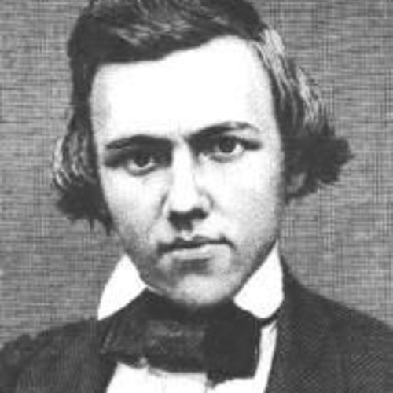
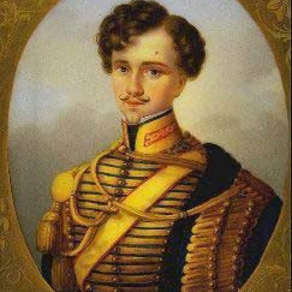
Paul Morphy vs. vévoda z Brunswicku a hrabě Isouard • Paříž 1858
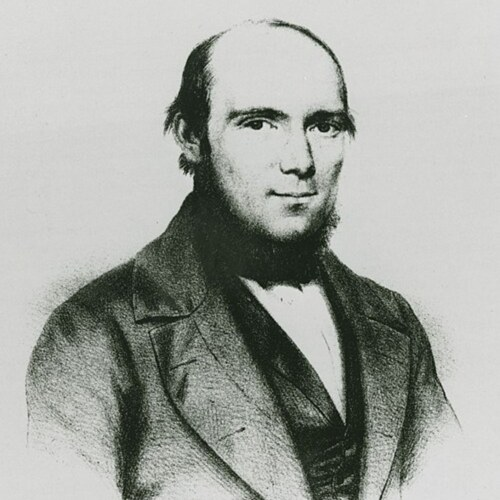
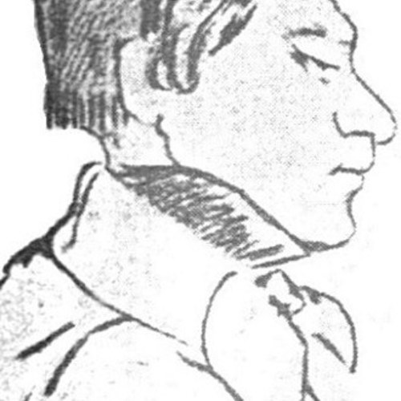
Anderssen – Kieseritzky • Londýn 1851
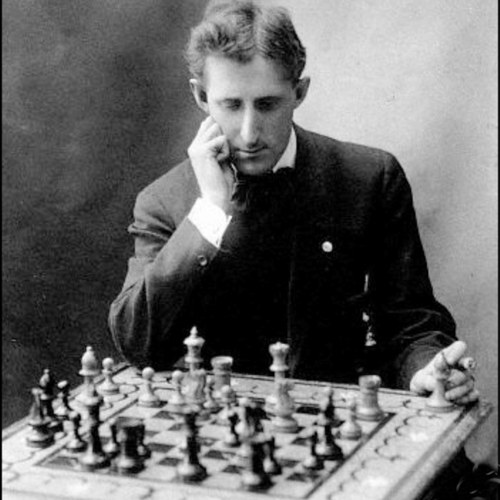
New York 1918 • slavný Marshallův útok
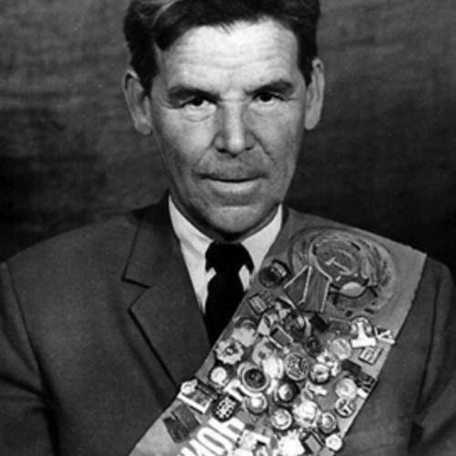
Donald Byrne – Bobby Fischer • New York 1956
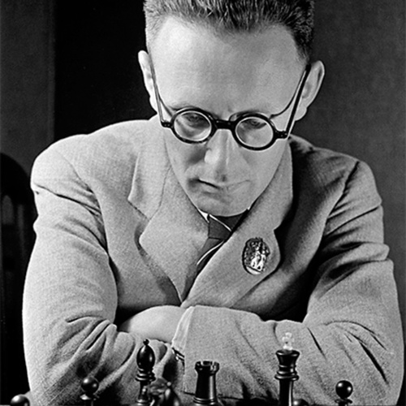
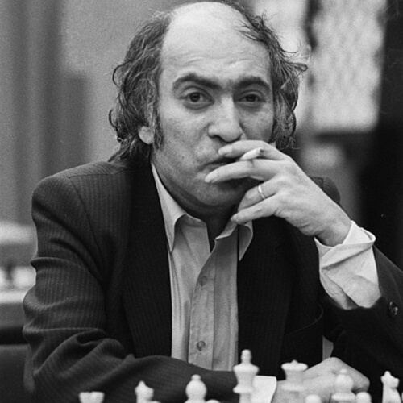
Moskva 1960 • 6. partie mistrovství světa
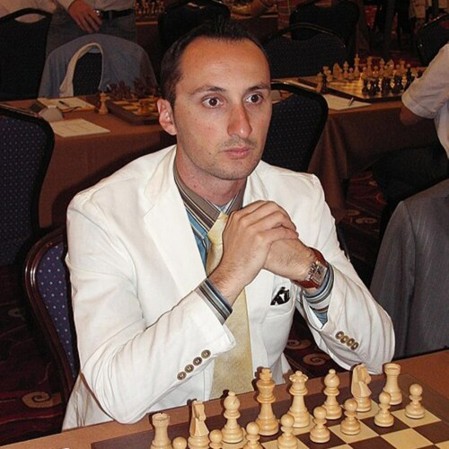
Baku 1961 • divoký útok dvou kouzelníků
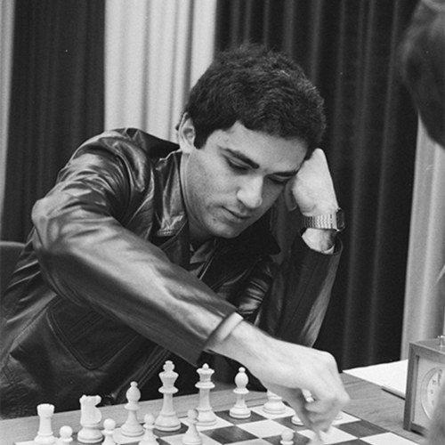
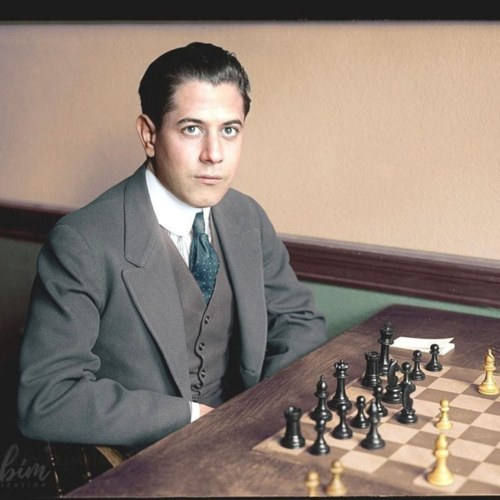
Wijk aan Zee 1999 • perla moderního šachu
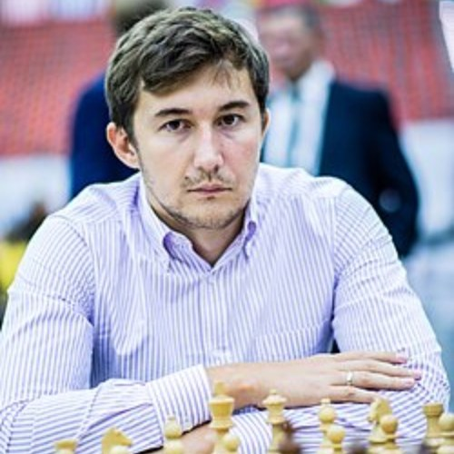
New York 2016 • moderní klasika a krásný závěr
Paul Morphy vs. vévoda z Brunswicku a hrabě Isouard • Paříž 1858
Génius rychlého vývinu. V téhle partii ukázal, proč se má nejdřív vyvinout armáda a až potom sbírat pěšci.
Vévoda z Brunswicku a hrabě Isouard hráli proti Morphymu společně. Partie se proto často uvádí jako Morphy proti dvěma aristokratům.
Krátká učebnice útoku: vývin, rošáda, otevřené sloupce a mat. Ideální partie na pochopení základních principů.
1. e4 e5 2. Nf3 d6 3. d4 Bg4 4. dxe5 Bxf3 5. Qxf3 dxe5 6. Bc4 Nf6 7. Qb3 Qe7 8. Nc3 c6 9. Bg5 b5 10. Nxb5 cxb5 11. Bxb5+ Nbd7 12. O-O-O Rd8 13. Rxd7 Rxd7 14. Rd1 Qe6 15. Bxd7+ Nxd7 16. Qb8+ Nxb8 17. Rd8#
Adolf Anderssen – Lionel Kieseritzky • Londýn 1851
Romantický útočník. Obětoval materiál takovým stylem, že se partie učí dodnes.
Silný soupeř své doby. V partii vzal hodně materiálu, ale král zůstal v ohni.
Anderssen obětoval obě věže i dámu a dal mat lehkými figurami. Romantický šach v nejčistší podobě.
1. e4 e5 2. f4 exf4 3. Bc4 Qh4+ 4. Kf1 b5 5. Bxb5 Nf6 6. Nf3 Qh6 7. d3 Nh5 8. Nh4 Qg5 9. Nf5 c6 10. g4 Nf6 11. Rg1 cxb5 12. h4 Qg6 13. h5 Qg5 14. Qf3 Ng8 15. Bxf4 Qf6 16. Nc3 Bc5 17. Nd5 Qxb2 18. Bd6 Bxg1 19. e5 Qxa1+ 20. Ke2 Na6 21. Nxg7+ Kd8 22. Qf6+ Nxf6 23. Be7#
New York 1918 • první slavné předvedení Marshallova útoku
Legendární technik a mistr obrany. Tady čelil připravené domácí bombě.
Útočník, který dlouho schovával nebezpečnou novinku ve španělské hře.
Marshall vytáhl ostrou přípravu, ale Capablanca ji ubránil s ledovým klidem. Krásná ukázka obrany pod tlakem.
Španělská hra, Marshallův gambit: černý obětuje pěšce za rychlou aktivitu a útok na krále. Capablanca ukázal, že nestačí jen útočit — musí to vycházet konkrétně.
Donald Byrne – Bobby Fischer • New York 1956
Zkušený americký mistr. Proti němu seděl teprve třináctiletý Fischer.
Třináctiletý talent zahrál kombinaci, která z něj udělala legendu ještě před dospělostí.
Fischer obětoval dámu za dlouhodobou aktivitu figur. Není to jen trik, ale hluboká kombinace.
Legendární moment: 17...Be6!! a později oběť dámy. Černé figury se pak rozjedou tak silně, že bílý král nemá kam utéct.
Moskva 1960 • 6. partie mistrovství světa
Mistr světa a představitel přesné poziční šachové školy. V této partii vede bílé figury.
Kouzelník z Rigy a jeden z nejútočnějších mistrů světa. V této partii vede černé figury.
Baku 1961 • partie dvou útočných géniů
Kouzelník z Rigy. Člověk, u kterého i „špatná“ oběť mohla být psychologicky smrtící.
Jeden z nejkreativnějších útočníků historie. Proti Talovi se nebál žádného chaosu.
Partie je slavná hlavně energií a fantazií. Tady nejde o suché počítání, ale o odvahu, iniciativu a útok na krále.
Sleduj, jak se figury nehrají „na materiál“, ale na aktivitu. Přesně ten typ šachu, kvůli kterému se Tal stal kultovní postavou.
Wijk aan Zee 1999 • jedna z nejkrásnějších moderních partií
Agresivní výpočet, energie a tlak. V téhle partii zahrál kombinaci, která vypadá skoro počítačově.
Elitní soupeř světové úrovně. Právě proto je ta partie tak ceněná — nebyla to výhra proti slabému hráči.
Kasparov spustil dlouhou kombinaci s králem v centru dění. Partie se často uvádí mezi nejkrásnějšími vůbec.
Hlavní symbol partie: 24. Rxd4!! — začátek dlouhé taktické bouře, kde bílé figury pronásledují černého krále přes celou šachovnici.
New York 2016 • mistrovství světa, tie-break
Moderní mistr tlaku, koncovek a praktického šachu. V závěru zápasu ukázal i krásnou taktiku.
Výborný obránce. V zápase dlouho držel Carlsena pod tlakem.
Carlsen zakončil zápas efektním tahem dámy. Moderní klasika, kterou pochopí i divák: král je slabý a přijde rána.
Závěr: Qh6+!! — krásný tah, po kterém je černý král v matové síti.
Krátké praktické lekce na cestu do Španělska. Učíš se celé věty, které opravdu použiješ.
Cíl: koupíš si jízdenku na autobus do Lloret de Mar bez pomoci.
Ty: Buenos días. Necesito dos billetes para Lloret de Mar, por favor.
Řidič: Treinta euros.
Ty: Aquí tiene. Gracias.
Řidič: De nada. Buen viaje.